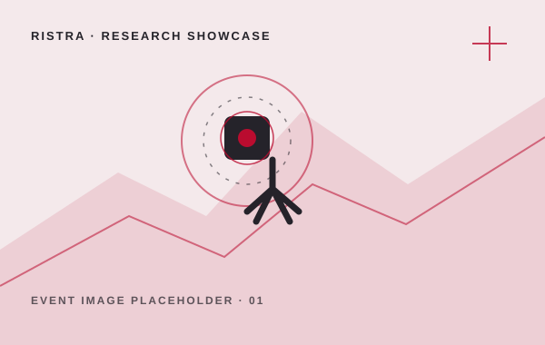
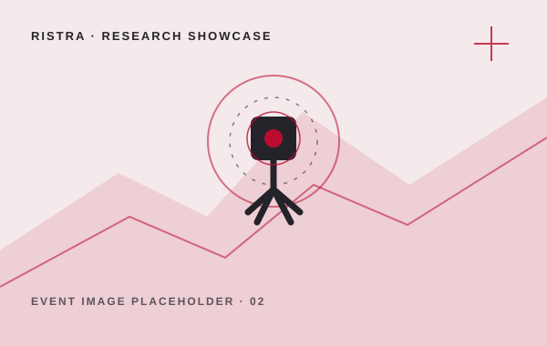
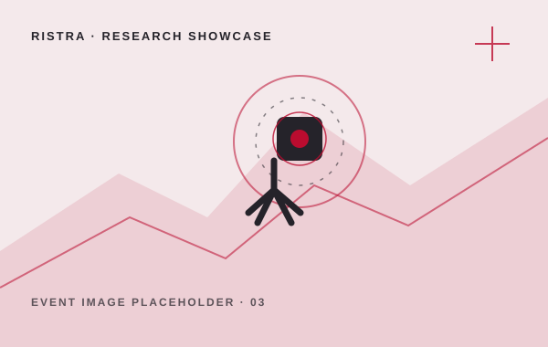
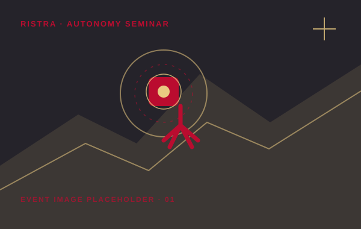
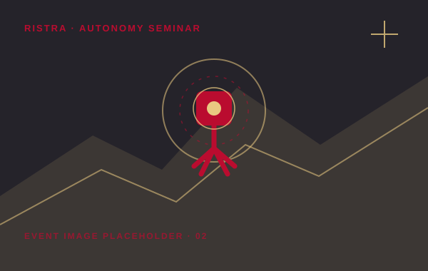
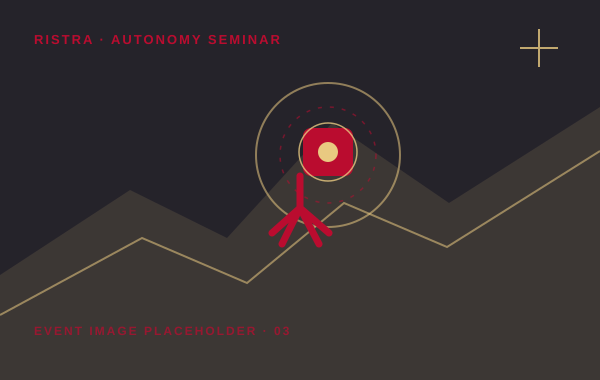
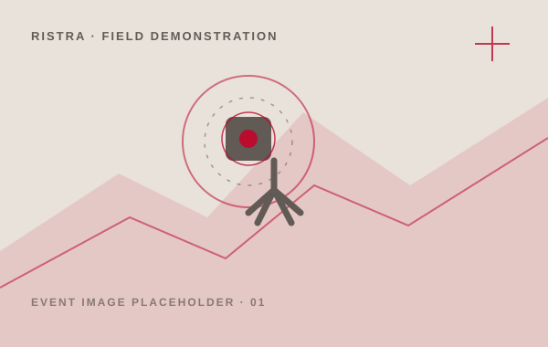
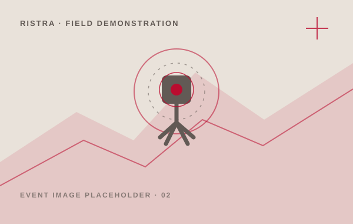
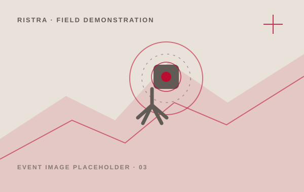

01 / RISTRA EVENT
RISTRA Research Showcase
DATE / LOCATION TO BE ADDED
A sample event entry for a RISTRA research showcase. Add a short summary of the demonstrations, research conversations, and people who took part.
Questions about this event? Contact RISTRA ↗



02 / RISTRA EVENT
Trustworthy Autonomy Seminar
DATE / LOCATION TO BE ADDED
A sample seminar listing. Use this space for the speaker, talk topic, and a short description of how the discussion connects to RISTRA research.
Questions about this event? Contact RISTRA ↗



03 / RISTRA EVENT
Robotics Field Demonstration
DATE / LOCATION TO BE ADDED
A sample activity entry for field testing and community engagement. Add details about the robotic systems, environment, and lessons from the activity.
Questions about this event? Contact RISTRA ↗


